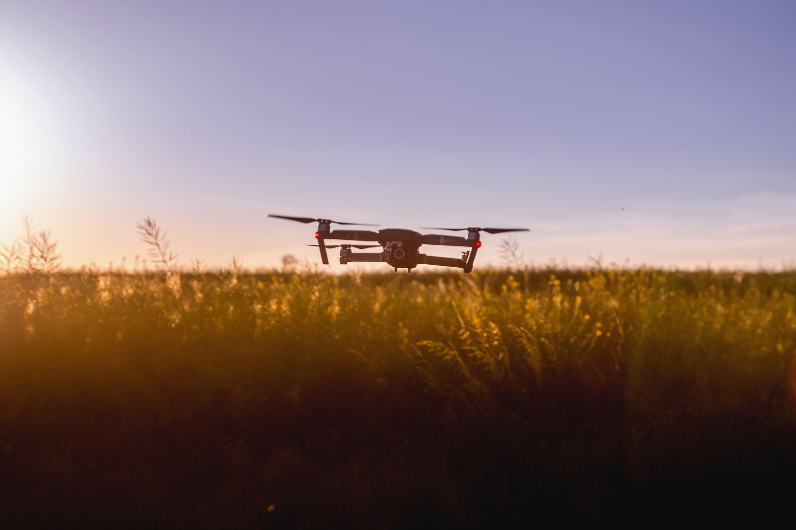

Link
Telemetry radio
jonas@skytelemetry.example
Delft, NL · replies within 2 working days
UAV Systems Engineering · Delft, NL
I’m Jonas Weber, an autonomous UAV systems engineer. I build the unglamorous half of drone operations — ground stations, telemetry links and the log pipelines that let a team prove what its aircraft did, flight after flight. If your operations end in a folder of screenshots and a radio nobody has budgeted, we should talk.

| T | Event | Note |
|---|---|---|
| −12 min | PRE-FLIGHT | Compass and estimator checks green. Link margin measured at the planned far corner: 32 dB, not assumed. |
| 00:00 | TAKEOFF | Auto mission, survey grid A, 60 m AGL, wind 4 m/s from the north-west. |
| 06:41 | EVENT | Telemetry signal dip, 9 seconds — Fresnel graze on the hangar roofline. On-board log complete; nothing lost. |
| 18:03 | RTL | Return triggered at the planned battery reserve, not at the low-battery warning. |
| 19:47 | LAND | Log downloaded at the bench the same hour. Review booked for the same evening. |
| +2 h 10 | LOG REVIEW | Vibration peak at 41 Hz traced to a nicked propeller. Replaced before Flight 215, not after a failure. |
01 · The Link Planner
A drone is not one radio problem, it is four, stacked. Pick a link — the sheet below is the same one I fill in on a client’s bench before anyone talks about range.
Bands are the common licence-free fits; ranges are honest line-of-sight working figures, not brochure numbers.
Link
Telemetry radio
Band
868 / 915 MHz
What it carries
MAVLink telemetry — position, attitude, battery, mode — plus mission and parameter upload. This is the link the log is made of.
Data rate
10–60 kbit/s usable, set by the radio air rate
Working range
2–10 km line-of-sight on stock antennas; further behind a tracking antenna
Latency
Tens of milliseconds — plenty for telemetry, wrong for hand-flying
Doppler at 15 m/s
About 46 Hz at 915 MHz — a rounding error
What breaks it first
The Fresnel zone. Drop the path into a roofline, a tree belt or the far side of a hangar and the margin goes first: the aircraft is still flying, the log just stops. Ground-side antenna height and pointing are the cheap fix nobody does.
| Link | Band | Carries | Rate class | Working range |
|---|---|---|---|---|
| Telemetry radio | 868 / 915 MHz | MAVLink telemetry, mission upload | kbit/s | 2–10 km line-of-sight |
| Control link | 2.4 GHz | Sticks, modes, arm command | Low-rate, high priority | 1–5 km open country |
| Video downlink | 5.8 GHz | Camera feed | Mbit/s | 0.5–3 km |
| LTE command | 4G / LTE | Command, telemetry, log upload | Network-dependent | Coverage-shaped |
02 · The Link Budget
Path loss is the honest part of any radio plan: it depends on frequency and distance and on nothing you can argue with. Run your band and your longest leg through it. One habit from satellite work you can drop here — at 15 m/s, Doppler shift is a rounding error. On the ground, geometry eats links, not velocity.
Transmit power, antenna gains and receiver sensitivity are typical fits for each band, printed on the line under the readouts as you switch. Free-space loss only — trees, roofs and weather take their cut afterwards, which is what the margin is for.
Free-space path loss
105.6 dB
Received power
−77.6 dBm
Link margin
32.4 dB
LINK CLOSES With room to spare for cables, weather and optimism. This is where a working link lives.
TX 20 dBm · antennas +3 / +5 dBi · receiver sensitivity −110 dBm (typical fit for this band)
03 · Engagements
Current and recent work, stated the way it would appear in a log: what it is, who it is for, where it stands. Three of these are written up in full as case files.
| Engagement | Client | Scope | Status |
|---|---|---|---|
| Automated ground station + log pipeline | University UAS team, NL | Case File 01 | In service |
| Store-and-forward telemetry, 40-aircraft fleet | Inspection operator, DE | Case File 02 | In service |
| Link audit, BVLOS delivery trial | Logistics startup, DK | 868 MHz budget, antenna placement, failsafe check | Complete |
| Flight-ops handover + crew training | Regional survey operator, NL | Case File 03 | Complete |
| Failsafe & geofence review | Research institute, BE | Independent review, written findings | Booked · Mar 2026 |
04 · Fees
Every engagement is scoped in writing before it is priced. These are the shapes the quotes take — the same figures I give on a first call.
On Case File 01 — the university ground station
“Our students could fly. What they could not do was prove, afterwards, what the aircraft had done. Jonas built the station and the log pipeline that made every flight answerable — our safety case went from a folder of screenshots to a system.”Dr. Marije van Dam · UAS Laboratory Coordinator, technical university, Netherlands
Aircraft, autopilot, the links fitted, and what the logs currently can’t tell you. That is enough to start.
or write directly: jonas@skytelemetry.example